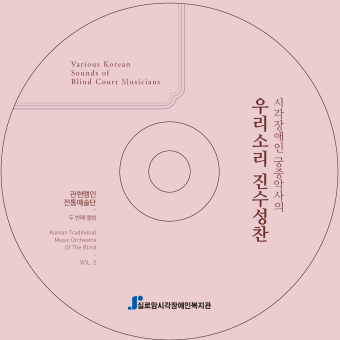
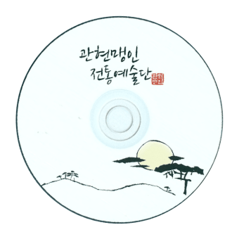

음반
- 작품소개
- 음반
관현맹인전통예술단 2집 2016. 12
곡 목록 Tracks

- 01. 평조회상 中 ‘상령산’ 14:10
- ‘Sangnyeongsan’of Pyeongjohoesang
- 02. 판소리 흥보가 中 ‘박 타는 대목’ 08:41
- Baktaneun Daemok(Heungbo's Breaking a
Calabash) in Pansori ‘Heungboga’ - 03. 전용선류 단소산조 13:11
- Danso Sanjo(composed and arranged by
Chusan Jeon, Yongsun) - 04. 시창 中 ‘관산융마’ 06:41
- ‘Gwansannyungma’in Sichang(Singing Poem)
- 05. 대금과 피아노 2중주 ‘다향(爹香)’ 07:02
- Daegeum and Piano duet ‘Dahyang’
- 06. 거문고 독주 ‘출강(出鋼)’ 06:25
- Geomungo solo ‘Chulgang’
- 07. 설장구를 위한 놀이 ‘소리 빛’ 09:51
- The play ‘Light of Sound’ for Seoljanggu
참여한 사람들 Credit
- 단장 최동익 Director Choi, Dongic
- 예술감독 변종혁 Artistic Director Byun, Jonghyuk
- 집박 이진용 Jipbak Lee, Jinyong
- 대금 문종석, 박지선 Daegeum Moon, Jongseok | Park, Jisun
- 소금 문종석 Sogeum Moon, Jongseok
- 단소 박지선 Danso Park, Jisun
- 해금 변종혁 Haegeum Byun, Jonghyuk
- 거문고 김수희 Geomungo Kim, Soohee
- 타악 정 철, 이진용, 김수희, 김소영 Percussion Jung, Chul | Lee, Jinyong | Kim, Soohee | Kim, Soyeong
- 시창 이현아 Sichang Lee, Hyun-A
- 판소리 문다솔, 김지연 Pansori Moon, Dasol | Kim, Jiyeon
- 피아노 이진용 Piano Lee, Jinyong
- 피리 이 영(객원) Piri Lee, young(guest)
- 가야금 유희정(객원) Gayageum You, Heejung(guest)
- 스태프 김미경, 신동선, 김미정, 김잔듸, 서의승, 유지혜 Staff Kim, Mikyoung | Shin, Dongsun | Kim, Mijung | Kim, Jandui | Seo, Euyseung | You, Jihye
- 레코딩 프로듀서 이정면 Recording Producer Lee, Jungmyeun
- 레코딩, 믹싱 엔지니어 이정면, 박성은 Recording, Mixing Engineer Lee, Jungmyeun | Park, Seongeun
- 믹싱, 마스터링 이음사운드 Mixing, Mastering by E-UM SOUND
- 디자인 하이픈컴퍼니 Design hyph-n company
- 인쇄 빅사운드 Print BigSound
관현맹인전통예술단 1집 2014. 02
곡 목록 Tracks

- 01. 대금독주 ‘청성곡’ 06:13
- Daegeum Solo 'Chung-Song-gok‘
- 02. 가야금 병창 흥보가 中 ‘제비노정기’ 08:11
- Travel of a Swallow (the part of the Song of Heungbo)
- 03. 생소병주 ‘수룡음’ 06:10
- Saeng-so-byeong-ju 'Suryongeum'
- 04. 여창가곡 中 ‘계략’ 06:00
- 'Gyerak' in the Yeochanggagok
- 05. 거문고, 대금 2중주 ‘금강산’ 06:45
- Duet for Geomungo and Daegum ‘Geumgang
Mt.’ by Chun Inpyung - 06. 산조합주 08:49 Sanjo Ensemble
- 07. 설장구 합주 09:26
- Seol-Janggu Duet 'Woolim'(sound)
- 08. 남도민요연곡 ‘성주풀이, 흥타령, 개고리타령’ 09:08
- Namdo Minyo Yeongok(Southern Province folk song)
'Seongju-puri, Heung-taryeong, Kaegori-taryeong'
참여한 사람들 Credit
- 제작 : 실로암시각장애인복지관 Production Siloam Center for the Blind
- 기획 : 관현맹인전통예술단 Plan Korean Traditional Orchestra of the Blind
- 단장 : 최동익 Director Choi, Dongic
- 감독 : 변종혁(해금) Artistic Director Byun, Jonghyuk(Heagum)
- 단원 : 정철, 김수희, 이진용, 이민정, 박지선, 이현아, 문종석, 윤가람 members Jung, Chul | Kim, Soohee | Lee, Jinyong | Lee Minjung | Park, Jisun | Lee, Hyun-A | Moon, Jongseok | Yoon, Garam
- 레코딩 & 믹싱 : 국악방송(except 02/08 Tracks 2013.11 제3회 정기연주회 라이브) Recording & Mixing Gugak Broadcasting (except 02/08 Tracks 2013. 11 Live in 3th regular concert)
- 연출 및 진행 : 박옥련, 신동선, 김미정, 임은성, 김소희, 서의승 Staff Park, Okryun | Shin, Dongsun | Kim, Mijung | Yim, Eunsung | Kim, Sohee | Seo, Euyseung
- 객원 : 한양국악단(지휘: 안성우) Guest HanyangGugakdan(director An, Sungwoo)